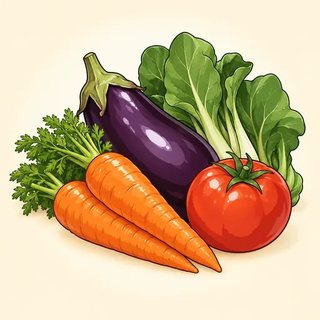

Narrating Past & Future — Classroom Materials
Everything to print for Classes C14–C16: picture flashcards, story & future identity cards, the teacher's listening scripts, the What Had Happened? picture-clue game, the Worst Day Ever story-chain kit, and the Life in 2040 discussion cards with roles and talking chips.
What to Print
| Set | What | How many | Used in |
|---|---|---|---|
| A | Picture flashcards (what had happened · small disasters & connectors · 2040 topics) | 1 set for the board | C14, C15, C16 |
| B | Story & future identity cards (6) | 1–2 sets, on a side table | C14, C15, C16 |
| C | Listening & dictation scripts | Teacher only | C14, C15, C16 |
| D | What Had Happened? picture-clue game (16 + 2 blank cards) | 1 deck per group of 3–4 | C14 (and C15 warmer) |
| E | Worst Day Ever story chain: story map, 6 starter cards, 12 event cards, reaction strip | 1 map + 1 starter + 12 events per group of 4 | C15 |
| F | Life in 2040: 12 topic cards, 4 role cards, talking chips | 1 set per group of 4 · 3 chips per learner | C16 |
A · Flashcards — What Had Happened? (5.1)
Use in the C14 lead-in and drill: hold up a card and say a later moment ("Omar couldn't get into his apartment."); learners give the earlier cause with the past perfect ("He'd lost his keys.").


A · Flashcards — Small Disasters & Connectors (5.2)


Connector cards: stick them on the board in story order. The small line shows the tense partner.
A · Flashcards — Life in 2040 Topics (5.3)




B · Story & Future Identity Cards (5.1 · 5.2 · 5.3)
Any learner may use a card instead of their own life, in any task: no reason needed. In 5.1 they tell the "When I arrived…" line as their "My story." In 5.2 they tell the small disaster as a full story with the story map. In 5.3 they use My week ahead for "This time next week, I'll be…". The people are the same as in the A1 and A2 kits, a year or two later.
Rosa — cleaning supervisor at a hospital
When I arrived… at work on my first day as supervisor, the team had already made me a cake.
A small disaster: It was snowing. I'd just started the night shift. Suddenly the power went out in our building. We finished the work with flashlights. In the end, my boss thanked the whole team.
My week ahead: Mon 9 a.m.: training two new workers · Wed: I'm going to ask about a computer class · Fri 7 p.m.: I'll be dancing at my cousin's party!
Daniel — bus driver
When I arrived… at the bus depot, the other drivers had already left, because I'd read the wrong schedule.
A small disaster: I was driving my usual route when a passenger shouted, "My bag!" She'd left it at the last stop. I called the office, and a colleague found it. In the end, she brought me cookies the next day.
My week ahead: Tue: playing soccer after work · Thu 2 p.m.: seeing the dentist · This time next Sunday I'll be watching the big game.
Amina — nursing student and mother
When I arrived… at my exam, I realized I'd left my calculator at home.
A small disaster: It was my son's birthday, and the kids were playing in the yard. I'd made a big chocolate cake. While I was carrying it outside, the dog ran between my legs… In the end, we ate the cake off the table with spoons, and everyone laughed.
My week ahead: Mon–Wed: working at the clinic (practice hours) · Thu evening: I'm going to study with my classmates · Sat 10 a.m.: I'll be taking my kids to the park.
Chen — food-truck owner
When I arrived… at the festival, all the good places had already gone.
A small disaster: It was a hot Saturday, and a long line was waiting. Suddenly the truck's generator stopped. I hadn't checked the gas that morning! A customer ran to get some. By the time he came back, the line had doubled. In the end, it was my best day ever.
My week ahead: Mon: buying vegetables at the market · Wed: I'm going to try a new recipe · This time on Saturday, I'll be cooking at the city festival.
Lucía — grandmother
When I arrived… at my daughter's house, the family had already hidden, and they shouted "Surprise!"
A small disaster: I was making tamales for the holidays, and I was talking on the phone. I'd forgotten the pot on the stove! By the time I remembered, the kitchen smelled of smoke. In the end, we ordered pizza, and my grandson said it was the best holiday ever.
My week ahead: Tue afternoon: walking with my friend · Thu: I'm going to learn video calls at the library · Sunday at noon: I'll be having lunch with my family.
Yusuf — forklift driver in a warehouse
When I arrived… at the job fair, I'd already printed ten copies of my résumé, but they wanted email only!
A small disaster: It was pouring. I was running to the bus when I dropped my phone in a puddle. I hadn't saved my new friend's number anywhere else. A few minutes later, he called me on my old phone. In the end, it was fine.
My week ahead: Mon–Fri: working the morning shift · Wed evening: English class · This time next Saturday I'll be playing in a soccer tournament.
C · Listening & Dictation Scripts (teacher reads aloud)
Read at a natural speed, with pauses. Read each script twice: once for the main idea, once for the task. Use contractions (I'd, she'd, I'll be), because that is what learners will hear outside class. Tell the stories like real stories: use your face and your voice.
5.1-A · Why was Sam late? (Workbook 5.1, Ex 1: number the events in the order they happened)
Answers (real order): 1 forgot to charge his phone · 2 woke up at 7:30 · 3 left his ID card at home · 4 got to the bus stop · 5 waited twenty minutes · 6 arrived at the office. Gist: yes, he was late (about an hour); Ms. Park's reaction isn't in the script, so ask learners to guess: "Will she be angry?"
5.1-B · Dictation (read each sentence 3 times)
5.2-A · Dev's worst day (Workbook 5.2, Ex 1)
Answers: 1 at ten o'clock · 2 sunny: the sun was shining · 3 it broke down · 4 his umbrella · 5 soaked, with coffee on his shirt · 6 he got the job. Follow-up: "Find two flashbacks." (He'd prepared · he'd bought · the bus had broken down · he'd left his umbrella.)
5.2-B · Dictation (optional; read each sentence 3 times)
5.3-A · Nora and Sam plan the week (Workbook 5.3, Ex 1: two voices, or ask a confident learner to read Sam)
Answers: 1 a small birthday party for Leo · 2 he's seeing the dentist · 3 pick up the cake · 4 as soon as she gets the order number · 5 at home (working from home). Forms: arrangement I'm having / I'm seeing · plan I'm going to order · offer I'll pick it up · will be -ing will you be using / I'll be working / we'll be eating · time clause as soon as I get it / until the party starts.
5.3-B · Dictation (optional; read each sentence 3 times)
D · Game — What Had Happened? (5.1)
- Groups of 3–4. Fold the answer strip under each card (or cut it off). Put the cards face down.
- Reader: take a card, read the scene aloud and show the picture clues. Don't show the answer!
- Detectives: one question each, clockwise: "Had he lost his keys?" The reader answers: "Yes, he had. / No, he hadn't." You can also guess: "I think he'd left them at work."
- Find the answer (or a very good answer the reader accepts) → keep the card. After 8 questions, the reader reads the answer and keeps the card.
- Next player is the reader. The most cards wins. Blank cards: invent a scene for another group.
🕗🐶 🌧️🔋
🌧️🔋 🔒
🔒


 💨
💨 😴
😴E · Worst Day Ever — Story Map (5.2 · print A4, 1 per group)
Put the map in the middle of the group. Go round the table: each player says the next step, using an event card if it fits. Twice round: the second story is always better. Invented people only. The story ends well or funny.
| ① 🎥 SCENE | It was … (day / weather / place), and … was / were …-ing. It was a hot Saturday morning, and the birds were singing. |
|---|---|
| ② ⏪ FLASHBACK | He / She had (already / just / never) … She'd never taken photos at such a big wedding before. |
| ③ ⚡ PROBLEM | Suddenly, … Suddenly, the elevator stopped between two floors. |
| ④ ➡️ NEXT | Then … / After that, … / While … was …-ing, … While she was waiting, she called the front desk. |
| ⑤ ⏱️ LATER | By the time …, … had … By the time she got out, the bride had already arrived. |
| ⑥ 🏁 ENDING | In the end, … In the end, the elevator photos were everyone's favorite! |
Starter cards (1 per group)
Event cards (12 per group) — the small number is a suggested step
- No way! · You're kidding!
- Oh no! · What a nightmare!
- Then what happened?
- What did you / he / she do?
- How did it end?
- That's so funny! · What a coincidence!
🎥 It was ___ and ___ was ___-ing.
⚡ Suddenly, ___.
🏁 In the end, ___.
Take steps ①, ③ or ⑥. Use the event card picture.
F · Life in 2040 — Discussion Cards (5.3)
- Groups of 4. Deal the role cards. Put the topic cards face down. Each learner has 3 talking chips.
- The Chair takes a topic card and reads the questions. Everyone gives an opinion with a reason. Put a chip in the middle each time you speak. No chips left? Listen and ask questions.
- After about 3 minutes, the Timekeeper says "Next topic." Take chips back and start again. Do 3–4 topics.
- Try to use: will / might / won't / will probably · will be + -ing · When …, … will … · "I'm not sure. I think…"
- This is about the world, not your own future. Talk about your own plans only if you want to.
🚗 Getting around
Will cars drive themselves? Will people still need a driver's license?
When cars drive themselves, …
💼 Work
Will most people be working from home? Which jobs will robots do?
In 2040, most people will be …-ing …
🛒 Shopping
Will we still go to supermarkets? Will stores have cashiers?
I don't think … will …
🏠 Homes
Will homes be smaller or bigger? What will a kitchen look like?
Homes might …
🏫 Schools & learning
Will children still go to school every day? Will teachers use AI?
Students will probably be …-ing …
🥗 Food
Will people eat less meat? Will we grow food in cities?
I think … will …, because …
💵 Money
Will people still use cash? Will everything be more expensive?
Cash might …
📱 Phones & technology
Will we still carry phones? What will we use instead?
As soon as …, people will …
🏙️ Our city
What will be different in our city? Will there be more parks or more buildings?
In 2040, our city will …
⚽ Free time & sports
Will people watch sports on TV or in virtual reality? What new hobbies will people have?
Most people will be …-ing …
🏥 Doctors & hospitals
Will we see the doctor by video? Will robots help nurses?
When …, doctors will …
🗣️ Learning languages
Will people still learn English if translation apps are perfect? Why or why not?
I'm not sure. I think …
Role cards (1 set per group)
🪑 Chair
Read the topic card. Make sure everyone speaks. "What do you think, ___?"
❓ Question-asker
Ask for reasons and more ideas. "Why do you think so?" "What about …?"
⏱️ Timekeeper
About 3 minutes per topic. "One more idea, then next topic."
📝 Reporter
Write the group's most surprising prediction. Tell the class at the end.
Warm-up choice cards · "This time next week…" (optional, on the side table)
Talking chips (cut out; 3 per learner, or use coins / paper clips)
Before the discussion, drill three frames on the board: "In 2040, most people will probably be …-ing." · "I don't think … will …" · "When cars drive themselves, …" Walk around with a notebook. Don't correct during the talk unless meaning breaks down. Give strong, talkative learners the Question-asker or Timekeeper role, and quiet learners the Chair role (reading the card aloud is a safe first turn). Never ask learners where they will live or what their family plans are.